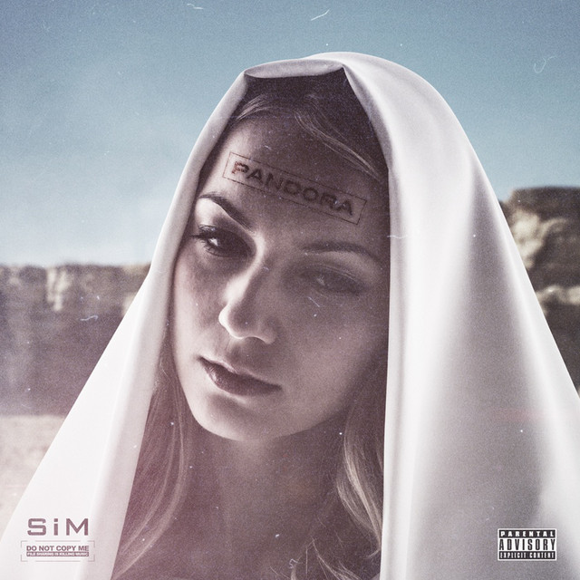

SiM (Silence iz Mine) es una banda japonesa de metal alternativo foramada durante 2004 en Shonan (Kanagawa).
Estilo musical
El estilo musical de SiM combina diferentes estilos como el rock alternativo, hardcore, nu metal, punk rock, ska, reggae y dub.
Se podría describir el sonido como algo similar a la banda galesa Skindred. A pesar de ser de origen japones,
practicamente todas sus canciones estan escritas en ingles. Ha obtenido tres Top 10 LP y cinco éxitos Top 40 de radio
Miembros de la banda
MAH
Name: Manabu Taniguti
Birthday: August 5, 1986 (age 37)
Birthplace: Kanagawa, Japan
vocals (2004–present)
guitars (2004–2006)
SHOW-HATE
Name: Shouhei Iida
guitars, keyboards, backing vocals (2006–present)
SIN
Name:Shinya Shinohara
bass guitar, backing vocals (2009–present)
GODRi
Name: Yuya Taniguchi
drums, backing vocals (2009–present)
Discografia
Nombre
Detalles
Portada
Silence iz Mine
Publicada el 25 de junio de 2008
Distribuido por U-Project
Formato CD
Seeds of Hope
Publicada el 12 de octubre de 2011
Distribuido por Gil Soundworks
Formato CD y descarga digital
Pandora
Publicada el 23 de octubre de 2013
Distribuido por Nayutawave Records
Formato CD y descarga digital

The Beautiful People
Publicada el 6 de abril de 2016
Distribuido por EMI Records
Formato CD y descarga digital
Thank God, There Are Hundreds Of Ways To Kill Enemies
Publicada el 17 de junio de 2020
Distribuido por Universal Music Japan
Formato CD y descarga digital
PLAYDEAD
Publicada el 27 de septiembre de 2023
Distribuido por Pony Canyon y UNFD
Formato CD y descarga digital
Song appearances
Titulo
Año
Apariciones
Existence
2015
Shingeki no Bahamut: Genesis anime theme song.
Crows
2015
Shingeki no Bahamut: Genesis anime theme song.
"No Future"
2016
Arcade game Mobile Suit Gundam Extreme Vs Maxi Boost ON opening theme song.
A/The Sound of Breath
2017
PS4 game Ryū ga Gotoku/Yakuza Kiwami 2 theme song.
The Rumbling
2022
Attack on Titan: The Final Season Part 2 anime opening theme song.
Under the Tree
2023
Attack on Titan: The Final Season Part 3 anime ending theme song.
Red
2023
Kengan Ashura Season 2 anime opening theme song.
Premios y Nominaciones
Premio
Año
Categoria
Work/nominee
Resultado
Billboard Japan Music Awards
2013
Independent Artist of the Year
Nominated
CD Shop Awards
2013
Best Live Video
Dusk and Dawn
Won
Space Shower Music Video Awards
2014
Best Video
Who's Next
Nominated
Space Shower Music Awards
2016
Best Punk / Loud Rock Artist
SiM
Nominated
7th Crunchyroll Anime Awards
2023
Best Opening Sequence/ Best Anime Song meter dos tablas en una
"The Rumbling"
(from Attack on Titan: The Final Season Part 2 anime)